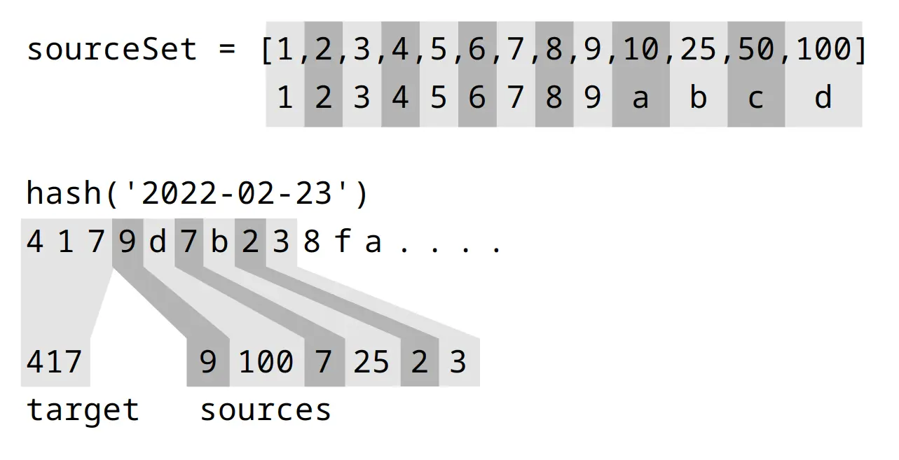

A Daily Game Without a Database
March 2022
In response to the popularity of Wordle I created Numble for the more numerically inclined.
My first idea for serving a new daily game was to prepopulate a database, but I found a more elegant solution which uses a hash of the current date to choose a target number and set of source numbers.
The first part of the hash determines the target number, and the 6 source numbers are chosen by continuing along the hash.

There’s some extra logic to limit repeats and include at least one big number, but this is essentially what happens whenever today’s game is requested.
By taking recursive hashes unlimited random data can be seeded.
Databases aren’t evil, but in some cases they may be an unnecessary complexity.